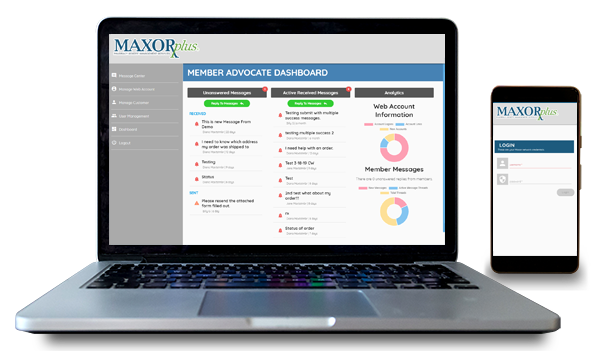
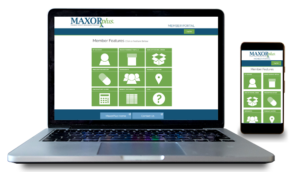
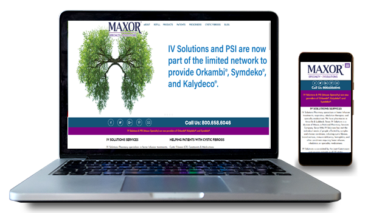
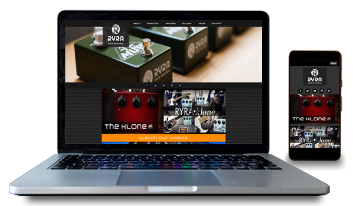
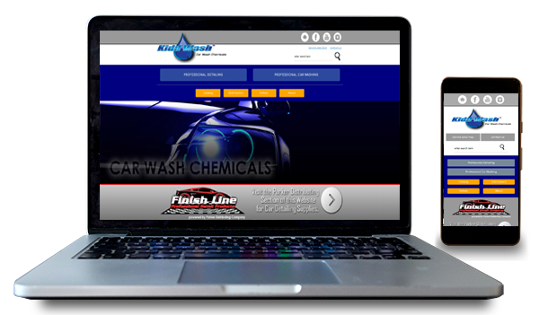
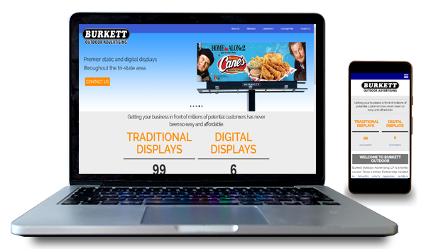
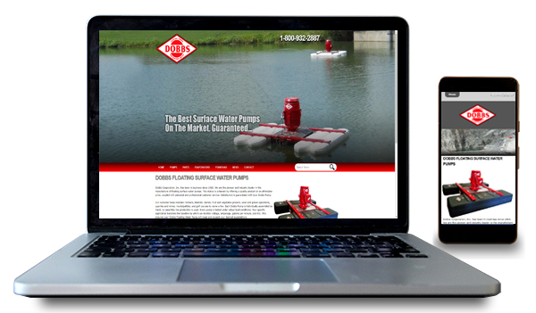

MaxorPlus Member Advocate Portal
This is a robust customer service portal that allows CSRs to help members manage their web accounts, assist members in finding pharmacies within their region, providing benefit documents to members, initiating member services, messaging members with secure contact and more.
This website is role based and was a full stack project from the front to the back end. Site functionality is dictated by a users role or combination of roles.
Site Development Details:
Framework: Angular 6 / .NET WebAPI, Language: Typescript / C#, Database: Microsoft SQL Server / Oracle

MaxorPlus Member Portal
This web application was built using AngularJS technology and is completely dynamic in nature. It can provide services to multiple clients using a single codebase for front-end, REST, and Backend (SOAP) service layers. The web app is feature driven meaning that different clients can have custom behavior depending uponn their needs and desired behavior. This site serves as benefit and pharmacy management allowing users to refill prescriptions, pull report information, calculate copays for covered and non-covered drugs, access benefit documentation and even download/print replacement member cards.
All transmissions on this site are secured using multiple front-end and server technologies. The site contains a custom message center that allows members to speak directly to customer service reps securely within the portal.
Site Development Details:
Framework: AngularJS / .NET, Language: Javascript / C# / VB.Net, Database: Microsoft SQL Server / Oracle

MaxorPlus PBMS Branding Website
MaxorPlus if a full service pharmacy benefit management services company. This website provides promotional and consumer based information to members of the PBM. It also contains a blog and funnel links to respective member portals for the PBM division of the business. This site is fully responseive loads across all mobile devices as well as mid and wide screen monitors.
This site implements all content security policies to keep any transmissions secure along with custom headers to prevent XSS attacks and more.
Site Development Details:
Framework: Drupal (CMS), Language: PHP, Database: MYSQL
IV Solutions Branding Website
IV Solutions is a specialty pharmacy that caters to multiple demographics of patients with a variety of complex chronic medical conditions. This website contains a full blog with social marketing integration. The site also contains multiple web forms that allow users to submit prescription details, register for patient services, and reach out for assistance with their medications. The website is fully responsive and has mid to high amounts of traffic per month.
This site implements all content security policies to keep any transmissions secure along with custom headers to prevent XSS attacks and more.
Site Development Details:
Framework: Drupal (CMS), Language: PHP, Database: MYSQL

Rock Your Repaired Amp
Rock Your Repaired Amp (RYRA) is a start-up business that builds custom vintage guitar pedals. These pedals are acclaimed across the music industry and sought after by some of musics best guitar players. Since the launch of this website, orders for RYRA products have increase exponentially. When the site launched RYRA had a single product, a vintage pedal that was hand built and powerder coated in multiple colors. Now RYRA produces a multitude of different pedals with a full range of effts as well as custom guitars and accessories.
The website is a full ecommerce solution that is integrated with PayPal for payment processing. RYRA ships to all domestic US locations as well as multiple international locations.
Site Development Details:
Framework: Drupal (CMS), Language: PHP, Database: MYSQL

Parker Distributing Company
Parker Distributing Company is a company located just outside of Canyon, Texas. They specialize in car care chemicals and accessories. These products are sold wholesale to carwash companies all across the tri-state area (Texas, New Mexico, and Oklahoma). They spcialize in car cleaning products ranging from aerosol cleaners and air fresheners to bulk cleaning chemicals. They have an established customer base that orders their products in bulk. This site is not ecommerce, but an online catalog that allows their customers to browse their inventory and schedule their orders with Parker Distributing.
Kidd Wash is a company in partnership with Parker Distributing that sells custom carwash chemical. These chemicals are highly rated by all the businesses that utilize them.
Site Development Details:
Framework: Drupal (CMS), Language: PHP, Database: MYSQL

Burkett Outdoor Advertising
Burkett Outdoor is a Billboard Advertising company with display units across the Texas Panhandle and New Mexico. There are more than 70 locations that are in consistent rotation with local and nationwide advertising displays. Burkett Outdoor has multiple digital display boards as well as static printed units. Randy Burkett is well known in the Amarillo community and even sat on the City Of Amarillo City Council. The website contains maps and descriptions of each of these displays as well as individual listings of the locations with fact sheets for potential customers.
Burkett Outdoor's website is a catalog style website and completely managable by their staff with no needed intervention aside from any CMS updates.
Site Development Details:
Framework: Drupal (CMS), Language: PHP, Database: MYSQL

Dobbs Pumps
Dobbs Corporation, Inc. has been in business since 1960. We are the pioneer and industry leader in the manufacture of floating surface water pumps. This status is achieved by offering a quality product at an affordable price, coupled with personal and professional customer service. Satisfaction is guaranteed with your Dobbs Pump..
Our customer base includes: farmers, feedlots, dairies, fruit and vegetable growers, sand and gravel operations, quarries and mines, municipalities, and golf courses to name a few. Each Dobbs Pump is individually assembled by hand; no assembly line production is used. Every pump is tested under actual load conditions.
Site Development Details:
Framework: Drupal (CMS), Language: PHP, Database: MYSQL
